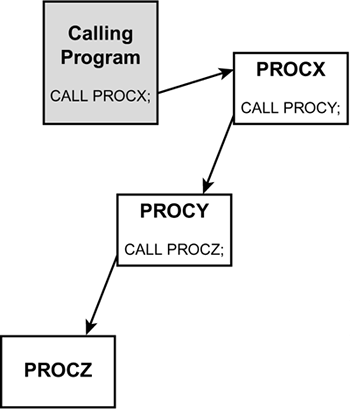
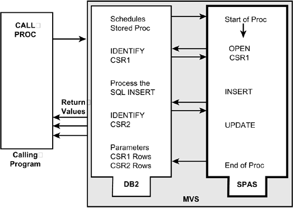
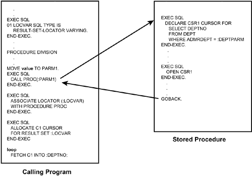

|
|
< Day Day Up > |
|
Implementing DB2 Stored ProceduresNow that you understand what stored procedures are and why you would want to use them, you're ready to investigate how to implement stored procedures in DB2. Developing a Stored ProcedureYou can design and develop stored procedures in a similar manner to the way you develop any other application program. However, stored procedures have some special design requirements that you need to understand prior to developing them: using LE/370, coding parameters, returning result sets, and changing the program preparation procedure. Using LE/370You must develop stored procedures using an LE/370 language. LE/370 is mandatory for the use of stored procedures. LE/370 provides a common runtime environment for multiple, disparate programming languages. The runtime services available to LE/370 include error handling, storage management, and debugging. The benefit to DB2 is that the runtime services are the same for every programming language used to deploy stored procedures. Coding ParametersParameters are essential to the effective use of stored procedures. Parameters allow data to be sent to and received from a stored procedure. Each stored procedure has a parameter list associated with it. This list must be static and predefined. The parameter list defines the data type, size, and disposition (output, input, or both) of each parameter. The complete process of registering stored procedures, including parameter lists, is outlined in the upcoming section "Registering Stored Procedures." You must define the parameters to the stored procedure using the appropriate technique for the language you're using. For COBOL programs, you must define parameters in the LINKAGE SECTION. Refer to Listing 15.1 for a sample stored procedure shell using COBOL. Listing 15.1. COBOL Stored Procedure ShellMust set up IDENTIFICATION and ENVIRONMENT DIVISIONS. DATA DIVISION. LINKAGE SECTION. ******************************************************** ** PARAMETERS DEFINED IN LINKAGE SECTION ** ******************************************************** 01 IN-PARM PIC X(20). 01 OUT-PARM PIC X(30). ******************************************************** ** INDICATOR VARIABLES USED ONLY IF PARMS CAN BE NULL ** ******************************************************** 01 NULL-INDVARS. 05 INDVAR-1 PIC S9(4) COMP. 05 INDVAR-2 PIC S9(4) COMP. WORKING-STORAGE SECTION. Must declare all necessary variables. ******************************************************** ** PARAMETERS SPECIFIED TO THE PROCEDURE DIVISION ** ******************************************************** PROCEDURE DIVISION USING PARM-A, PARM-B, NULL-INDVARS. MAIN-PARAGRAPH. . . . IF INDVAR-1 < 0 if input parameter is null perform an error-routine . . . MOVE "SOME VALUE" TO OUT-PARM. MOVE ZERO TO INDVAR-2. PROGRAM-END. GOBACK. Be sure to test all input parameters that can be null. If the input parameter is null, you must code the program to handle that situation. Likewise, for output parameters that can be null, be sure to set the null indicator variable to zero if not null or -1 if null. Additionally, be sure to set all input parameters to an appropriate value in the calling program prior to issuing the CALL to the stored procedure. The value of the stored procedure parameters is set at the time of the procedure CALL. Nesting Stored Procedure CallsPrior to DB2 V6, a stored procedure could not issue the CALL statement, thereby forbidding one stored procedure to call another stored procedure. This limitation is removed for DB2 V6 and above. When one stored procedure calls another stored procedure, it is referred to as a nested procedure call. DB2 supports 16 levels of nesting. When more than 16 levels of nesting are attempted a –746 SQLCODE is returned (SQLSTATE 57053). The nesting level includes calls to stored procedure, as well as trigger and user-defined function invocations. Nesting can occur within a single DB2 subsystem or when a stored procedure or user-defined function is invoked at a remote server. If a stored procedure returns any query result sets, the result sets are returned to the caller of the stored procedure. CAUTION DB2 restricts certain procedures from being called from another stored procedure, trigger, or UDF. A stored procedure, UDF, or trigger cannot call a stored procedure that is defined with the COMMIT ON RETURN attribute. Additionally, a stored procedure can CALL another stored procedure only if both stored procedures execute in the same type of address space. In other words, they must both execute in a DB2-established address space (SPAS) or both execute in a WLM-established address space. If the CALL statement is nested, the result sets generated by the stored procedure are visible only to the program that is at the previous nesting level. Figure 15.2 depicts three levels of nested procedure calls. The results set returned from PROCZ is only available to PROCY. The calling program and PROCX have no access to the result sets returned from PROCX. Figure 15.2. Stored procedure nesting. Furthermore, the result sets from PROCY would be available only to PROCX, and the result sets from PROCX would be available to the calling program. Returning Result SetsA stored procedure can return multiple row result sets back to the calling program. If you enable result sets to be returned, stored procedures become more efficient and effective. Benefits include the following:
Figure 15.3 shows the impact of result sets on stored procedure processing. Figure 15.3. A stored procedure returning result sets. CAUTION Stored procedure result sets can only be returned to the program that called the stored procedure. For example, if PRG1 calls SP1 and SP1 calls SP2, SP2 cannot return a result set to PRG1. To implement stored procedures that return result sets, you must perform several steps. The first step is to ensure that the RESULT_SETS parameter is specified correctly for the stored procedure. The RESULT_SETS parameter is specified on the CREATE or ALTER PROCEDURE statement and indicates the maximum number of result sets that can be returned by the stored procedure. To enable the stored procedure to return result sets, you must set the RESULTS SETs parameter to a value greater than 0. The second step is to specify the WITH RETURN clause on each OPEN cursor statement for which result sets are to be returned. The cursors must not be closed by the stored procedure. When the stored procedure ends, the result sets are returned to the calling program. This can cause trouble if you try to issue a COMMIT in the stored procedure and you are not using WITH HOLD or you try to issue a ROLLBACK. The last step is coding the calling program to accept result sets from the stored procedure. Refer to Figure 15.4 to view the interaction of a stored procedure with a calling program that accepts result sets. The first step is to declare a result set locator variable. Next, the calling program issues the CALL to execute the stored procedure. The stored procedure executes, opening a cursor that specifies the WITH RETURN clause. The stored procedure ends without closing the cursor, causing DB2 to return the result set automatically to the calling program. The calling program issues the ASSOCIATE LOCATOR statement to assign a value to the result set locator that was previously defined. The calling program then issues the ALLOCATE CURSOR statement to associate the query with the result set. Finally, the program can execute a loop to FETCH the rows of the result set. Figure 15.4. Coding to return a result set. The preceding outlines the tasks necessary when the calling program knows what result sets can be returned by the stored procedure it is calling. However, special SQL statements—DESCRIBE PROCEDURE and DESCRIBE CURSOR—are available when the calling program does not know in advance the number of result sets that a stored procedure can return. The DESCRIBE PROCEDURE statement returns the following information for a stored procedure that has already been called. The information, which is returned to the SQLDA, includes
The DESCRIBE CURSOR statement also returns information to the SQLDA, but it describes the columns accessed by the cursor. Preparing Stored Procedure ProgramsThe program preparation process for stored procedures is essentially the same as for any program that accesses DB2. The program code must be precompiled, compiled, and then link-edited into an executable form. The DBRM must be bound into a package; no plan is required for the stored procedure. When the program is link-edited, the LE/370 program library must be included. Likewise, the program for the stored procedure must link-edit either DSNALI (for CAF) or DSNRLI (for RRSAF), depending on which attachment facility is to be used. Of course, you also can link-edit the stored procedure program to run in multiple environments if you choose. No impact to the program preparation process is required for the calling program; you should use normal DB2 program preparation steps. NOTE A plan is still required for the calling program. Only the stored procedure (the called program) does not require a plan. The package for the stored procedure does not have to be bound in the package list of the calling program. Creating Stored ProceduresAs of DB2 V6, stored procedures are registered and managed within DB2 like other DB2 objects, using standard DDL statements—ALTER, CREATE, and DROP. After a stored procedure has been developed and is ready to be tested, the stored procedure must be created in the DB2 subsystem. CREATE PROCEDURE SYSPROC.PROCNAME(INOUT CHAR(20)) LANGUAGE COBOL EXTERNAL NAME LOADNAME PARAMETER STYLE GENERAL NOT DETERMINISTIC MODIFIES SQL DATA WLM ENVIRONMENT WLMNAME STAY RESIDENT YES RESULT SETS 1; This statement creates a stored procedure named PROCNAME in the SYSPROC schema using an external load module name of LOADNAME. The stored procedure is written in COBOL and runs under the control of WLM. It returns one result set. The ALTER statement can be used to change most characteristics of the stored procedure (except the stored procedure name, its schema, and parameters). The stored procedure can be removed from the DB2 subsystem using the DROP statement. Information about the stored procedures defined to DB2 is stored in the SYSIBM.SYSROUTINES table in the DB2 Catalog. This table is used to store information about stored procedures and user-defined functions. When ALTER, CREATE, and DROP statements are issued for those objects the structural definition of those objects is stored in SYSIBM.SYSROUTINES. When parameters are used, the parm lists are stored in SYSIBM.SYSPARMS. NOTE Prior to DB2 V6, you had to manually register stored procedures in the DB2 Catalog using SQL. Because in past releases of DB2 stored procedures were not created within DB2, nor were they created using DDL, the DBA had to use SQL INSERT statements to populate a DB2 Catalog table, SYSIBM.SYSPROCEDURES, that contained the metadata for the stored procedure. The following SQL provides an example of an INSERT to register a stored procedure named PROCNAME:
INSERT INTO SYSIBM.SYSPROCEDURES
(PROCEDURE, AUTHID, LUNAME, LOADMOD, LINKAGE,
COLLID, LANGUAGE, ASUTIME, STAYRESIDENT,
IBMREQD, RUNOPTS, PARMLIST, RESULT_SETS,
WLM_ENV, PGM_TYPE, EXTERNAL_SECURITY,
COMMIT_ON_RETURN)
VALUES
('PROCNAME', ' ', ' ', 'LOADNAME', ' ',
'COLL0001', 'COBOL', 0, 'Y',
'N', ' ', 'NAME CHAR(20) INOUT', 1,
' ', 'M', 'N', 'N');
Configuring Parameter ListsThe parameters to be used by DB2 stored procedures must be specified in parentheses after the procedure name in the CREATE PROCEDURE statement. You can define three types of parameters: The type of parameter must be predetermined and cannot be changed without dropping and re-creating the stored procedure. Consider, for example, a stored procedure with three parameters: an employee number, bonus, and total compensation. The stored procedure calculates the total compensation for a specified employee and returns it to the calling program. The bonus parameter is either set to 0 (in which case, no additional processing is performed) or to a percentage that the employee bonus is to be increased. If total compensation is greater than $100,000, the bonus percentage is cut in half. In this case, you could code the PARMLIST as follows: CREATE PROCEDURE PROCNAME(IN EMPNO CHAR(6), INOUT BONUS DEC(5,2), OUT COMPNSTN DEC(9,2)... This way, the stored procedure receives the employee number; receives, modifies, and then returns the bonus; and returns the total compensation. Providing names for the parameters is optional. An additional consideration when you're coding parameters for stored procedures is whether the parameters can be null. You use the PARAMETER STYLE parameter to specify nullability. You have three choices:
NOTE The default PARAMETER STYLE is DB2SQL. Refer to Listing 15.1 for an example of the indicator variables being passed to the stored procedure as an array. Managing Stored ProceduresWhether or not programs can call a stored procedure is controlled using commands to start and stop the stored procedure. Of course, the program must have been granted the appropriate privileges to run the stored procedure even if it has been started. The -START PROCEDURE command activates a stored procedure that is stopped or refreshes one that is cached. When a stored procedure is first created, you will not need to start the procedure before it can be called. DB2 will automatically activate the new procedure the first time it is referenced by a CALL statement. To issue -START PROCEDURE simply reference the procedure name to be started as follows:
-START PROCEDURE(procedure name)
Similarly, the -STOP PROCEDURE command prevents DB2 from accepting SQL CALL statements for stored procedures:
-STOP PROCEDURE(procedure name) ACTION(REJECT | QUEUE)
CAUTION The -STOP PROCEDURE command will not prevent CALL statements from running if they have already been queued or scheduled by DB2. When stopping stored procedures you can specify how CALL statements that are issued while the procedure is stopped are to be treated. This is accomplished with the ACTION parameter of the -STOP PROCEDURE command. There are two options:
To execute the -START and -STOP PROCEDURE commands, you must be authorized as either the owner of the stored procedure, or as SYSOPR, SYSCTRL, or SYSADM. Another part of management is monitoring. You can use the DISPLAY command to monitor the status of stored procedures:
-DISPLAY PROCEDURE(procedure name)
This command shows
Controlling FailuresThe DSNZPARM value STORMXAB (on installation panel DSNTIPX) can be set to specify a value for the maximum abend. You can use this value to indicate the number of times a stored procedure (or UDF) is allowed to terminate abnormally before it is stopped. This parameter is subsystem-wide—it applies to all stored procedures and UDFs the same across the entire DB2 subsystem.
The options available include
CAUTION The preceding parameters cannot be used for sourced functions or SQL scalar functions. Furthermore, after altering the stored procedure (or UDF) to specify one of these parameters, you must first STOP and then START the corresponding stored procedure or UDF to activate the new settings. Executing a Stored ProcedureTo run a stored procedure, you must explicitly issue a CALL statement. For example, the following statement calls a stored procedure named SAMPLE, sending a literal string as a parameter:
EXEC SQL
CALL SAMPLE('ABC')
END-EXEC.
To issue a CALL statement for a stored procedure requires the EXECUTE privilege on the stored procedure, as well as on the stored procedure package and packages (other than for UDFs and triggers) that run under the stored procedure. DB2 runs stored procedure code isolated from the core DB2 code. This is done to ensure that a rogue or buggy stored procedure does not crash DB2. There are two ways that DB2 isolates stored procedures:
Using a SPAS to run stored procedures was the first method used by DB2 and it continues to be completely supported through V7. However, there is only one SPAS and your management options are limited when choosing this method. Furthermore, the SPAS is destined for the scrap heap—as we will discuss in a moment. As of DB2 V5 and subsequent releases, you can use multiple stored procedure address spaces. Doing so requires the use of the z/OS Workload Manager (WLM). Running stored procedures in the WLM allows you to isolate code in separate address spaces based on the type of processing being performed. For example, OLTP stored procedures can be separated from data warehousing stored procedures. In this manner you can create an environment with multiple physical address spaces for stored procedures executing at the same dispatching priority as the calling program. What Is Workload Manager?The z/OS Workload Manager, or WLM, is used to implement workload management for your mainframe system. The purpose of workload management is to match the available system resources with the demands of z/OS components (such as CICS, batch, TSO, and so on). WLM will balance the work across available processors so as to most effectively utilize the resources of the machine. The goal is for z/OS to distribute workload automatically to achieve the desired response time, such as described in Service Level Agreements (SLAs). WLM works to distribute work without over-committing resources while at the same time attempting to maximize system throughput. WLM was introduced as a component of MVS/ESA V5. From this release onward, MVS can run in either "compatibility mode" or "goal mode," at the discretion of the installation. When in goal mode, WLM allows more effective use of a single system, because resource adjustment is automatic. WLM in goal mode is required for DB2 V8. Using WLM to control stored procedures has the following benefits:
For DB2 V7 and before, whenever the number of TCBs running in a WLM-managed stored procedure address space exceeded the value of NUMTCB a new WLM address space will be started. But as of V8, the value specified in NUMTCB is regarded as a maximum limit. WLM will determine the actual number of TCBs to run inside the WLM-managed address space based on resource usage. NOTE Consider specifying a higher number for NUMTCB after you move to V8 to allow WLM some flexibility in choosing the number of tasks. CAUTION Certain stored procedures require NUMTCB to be set to 1. The utility stored procedure provided with DB2, DSNUTILS, is an example of such a stored procedure. REXX stored procedures have to have a NUMTCB of 1.
Stored procedures created prior to V8 without a WLM environment will still run correctly and they can be altered using ALTER PROCEDURE. However, if the stored procedure is dropped you cannot re-CREATE it without changing it to a WLM-managed stored procedure. What Happens When a Stored Procedure Is Called?To execute a stored procedure, a program must issue the SQL CALL statement. When the CALL is issued, the name of the stored procedure, its schema name, and its list of parameters are sent to DB2. DB2 searches SYSIBM.SYSROUTINES for the appropriate row that defines the stored procedure to be executed. If the row is not found, the stored procedure does not run. If the row is found, DB2 retrieves the pertinent information to allow the stored procedure to execute, including the actual load module. DB2 then finds a TCB to use for the stored procedure in the appropriate SPAS (either WLM- or DB2-managed) and indicates to the SPAS that the stored procedure is to be executed. The SPAS reuses the thread of the calling program to run the stored procedure. The stored procedure runs, assigns values to input/output and output parameters, and returns control to the calling program. The calling program receives the input/output and output parameters and continues processing. The entire processing within the stored procedure is within the same unit of work as the CALL in the calling program. Locks acquired within the stored procedure continue to be held until released by the calling program (with a COMMIT or ROLLBACK). Built-In Stored Procedures
The three built-in procs are used to install JAR files into DB2. They are:
Stored Procedure GuidelinesOn the surface, stored procedures appear to be simple and highly effective new devices for enabling better application performance, enhancing database administration, and promoting code reuseability. However, as with every DB2 feature, you can find good and bad ways to proceed with implementing stored procedures. Keep the following guidelines in mind as you develop stored procedures at your shop. Exercise Control Over Stored Procedure StoppingUse the FAILURE parameters when creating stored procedures to explicitly control how DB2 should treat each stored procedure when failures occur. By specifying the most appropriate value for an individual routine, you can let some routines continue to be invoked for development and debugging, and stop other routines for maintenance before they cause problems in a production environment. Recall that the available options that can be specified using CREATE or ALTER PROCEDURE are: STOP AFTER FAILURE, STOP AFTER n FAILURES, and CONTINUE AFTER FAILURE. Minimize Nested Procedure CallsWhen a procedure calls another procedure, the ensuing structure is called a nested procedure. Nested procedures are difficult to test and modify. Furthermore, when one procedure calls another, the likelihood of reuse decreases because the complexity increases. However, in some cases, the benefits of nesting procedures can outweigh the problems. If you decide to nest procedure calls, be sure to analyze the number of nested stored procedures, triggers, and user-defined functions that can be executed for any given SQL statement and ensure that the limit of 16 levels of nesting is not exceeded. Consider Using SubprogramsA stored procedure can call another program using the facilities of the programming language. The program being called cannot be a stored procedure, though. The use of subprograms enables better program reuse. If you use subprograms, be sure to document their use within the stored procedure that calls the subprogram. The call statements used to execute the subprogram might be confused with the SQL CALL statement used to execute a stored procedure unless the program makes liberal use of comments. Plan Stored Procedure ImplementationDesign and implement only useful stored procedures. By useful, I mean only those stored procedures that support a business rule and are robust enough to perform a complete task without being too small to be trivial (a two-line procedure) or too large to be understood (a thousand-line procedure that performs every customer function known to the organization). To be useful, a stored procedure must
Specify Atomic ParametersAlways specify parameters at an atomic level. In other words, every stored procedure parameter must be complete and non-divisible. For example, use (IN FNAME CHAR(20), IN LNAME CHAR(30)) instead of (IN FULLNAME CHAR(50)) When you code parameters as non-atomic variable blocks, the stored procedure logic must parse the block. If changes occur to the data causing lengths or data type to change, procedures using atomic parameters are easier to modify and test. Learn LE/370You must write DB2 stored procedures using an LE/370 language. You therefore cannot use VS COBOL II to code stored procedures. However, stored procedures can be called from any DB2-compatible programming language (even non-LE/370 languages). Consider Using CODE/370IBM offers CODE/370, an integrated toolset consisting of editing, compilation, and debugging tools. Without a tool such as CODE/370, testing and debugging DB2 stored procedures can be difficult. Both mainframe and workstation interfaces are available for CODE/370. Use Stored Procedures for Internal DBA ToolsIf your shop has technical DBAs who like to code their own administration tools performance monitoring applications, consider using stored procedures to issue DB2 commands and access trace records using IFI (Instrumentation Facility Interface). You can develop generalized procedures that are maintained by the DBA and accessed by multiple programs to start, stop, and display data base objects or analyze IFCIDs and display performance details. Use Appropriate Data Types for ParametersMake sure that the calling program and the stored procedure use the same data type and length for each parameter. DB2 converts compatible data types, but by using the same data types and lengths, you can ensure efficient and effective execution. You can use user-defined distinct types for stored procedure parameters. Do Not Use LONG VARCHAR and LONG VARGRAPHIC ParametersWhen defining parameters to be used in your stored procedures, you can use the same built-in and user-defined data types as for the CREATE TABLE statement, except for LONG VARCHAR and LONG VARGRAPHIC data types. Instead, specify the parameter as a VARCHAR or VARGRAPHIC with an explicit length. Consider Using Output Parameters for the SQLCAThe SQLCA information for SQL statements executed in stored procedures is not returned to the calling program. Consider using output parameters to send SQLCA information to the calling program. This way, you can enable the calling program to determine the success or failure of SQL, as well as possibly provide error resolution information. A separate output parameter is required for each SQL statement in the stored procedure (because the SQLCA of the stored procedure changes for each SQL statement execution). Use the Appropriate PARAMETER STYLEWhen coding a stored procedure with parameters, use the PARAMETER STYLE option to identify the convention to be used to pass parameters to the stored procedure. The following options are available:
CAUTION You cannot specify PARAMETER STYLE DB2SQL with a REXX stored procedure. Consider Using Temporary TablesStored procedures can make excellent use of temporary tables to store intermediate results. Consider the following uses:
Promote ReuseabilityAs I mentioned earlier, the predominant reason for using stored procedures is to increase reuseability. By reusing components—in this case, stored procedures—you can write applications more quickly using code that is already developed, tested, and working. However noble the goal of reuseable components, though, simply mandating the use of stored procedures does not ensure that goal. Documentation and management support (perhaps coercion) are necessary to ensure successful reuse. The basic maxim applies: "How can I reuse it if I don't know it exists or don't know what it does?" Make Stored Procedures ReentrantStored procedures perform better if they are prepared to be reentrant. When a stored procedure is reentrant, a single copy of the stored procedure is used by many clients. A reentrant stored procedure does not have to be loaded into storage every time it is called. Compiling and link-editing your programs as reentrant reduces the amount of virtual storage required for the stored procedure address space. You can use the RENT compiler option to make a COBOL stored procedure reentrant. Link-edit the program as reentrant and reuseable. Furthermore, to make a reentrant stored procedure remain resident in storage, specify the STAY RESIDENT YES option in your CREATE or ALTER PROCEDURE statement. NOTE For details on compiling programs coded in languages other than COBOL to be reentrant, refer to the appropriate manual for the programming language you are using. Make Stored Procedures ResidentBetter use of system resources occurs if stored procedures are made reuseable and remain resident in the SPAS. Specify the STAY RESIDENT parameter when creating stored procedures, and avoid the NOREUS link-edit option. A program must be reentrant before it can be specified to stay resident. Therefore, the general recommendation is to make all stored procedures reentrant, reuseable, and resident. Accurately Specify DETERMINISTIC or NOT DETERMINISTICBe sure to specify accurately whether the stored procedure will always return the same result for identical input arguments. If the stored procedure always returns the same result for identical input arguments, it is DETERMINISTIC. If not, the stored procedure should be identified as NOT DETERMINISTIC. Any stored procedure that relies on external data sources that can change should be specified as NOT DETERMINISTIC. Other examples of stored procedures that are NOT DETERMINISTIC include stored procedures that contain SQL SELECT, INSERT, UPDATE, or DELETE statements or a random number generator. DB2 will not check to ensure that the [NOT] DETERMINISTIC parameter is specified appropriately. You must specify it accurately when you CREATE (or ALTER) the stored procedure. Specifying Collection IDsA specific collection ID can be assigned to a stored procedure using the COLLID parameter of the CREATE PROCEDURE statement. If NO COLLID is specified, the collection ID defaults to that of the package of the calling program. This result can be confusing. Explicitly specifying the collection ID is usually the better alternative. The default is NO COLLID. Returning Column Names from Stored Procedure Results SetsIf the SELECT statements in your stored procedure are static, the DESCSTAT subsystem parameter must be turned on to retrieve column names from your stored procedure result sets. Set the subsystem parameter on the host DB2 where the procedure was compiled. After setting this parameter, you will have to REBIND your stored procedure packages. If the SELECT statements inside of the stored procedure are dynamic, the result-set column names should be returned automatically. |
|
|
< Day Day Up > |
|